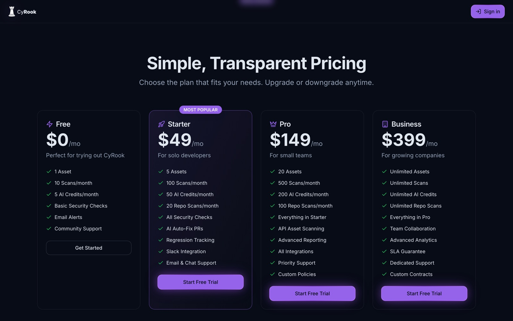
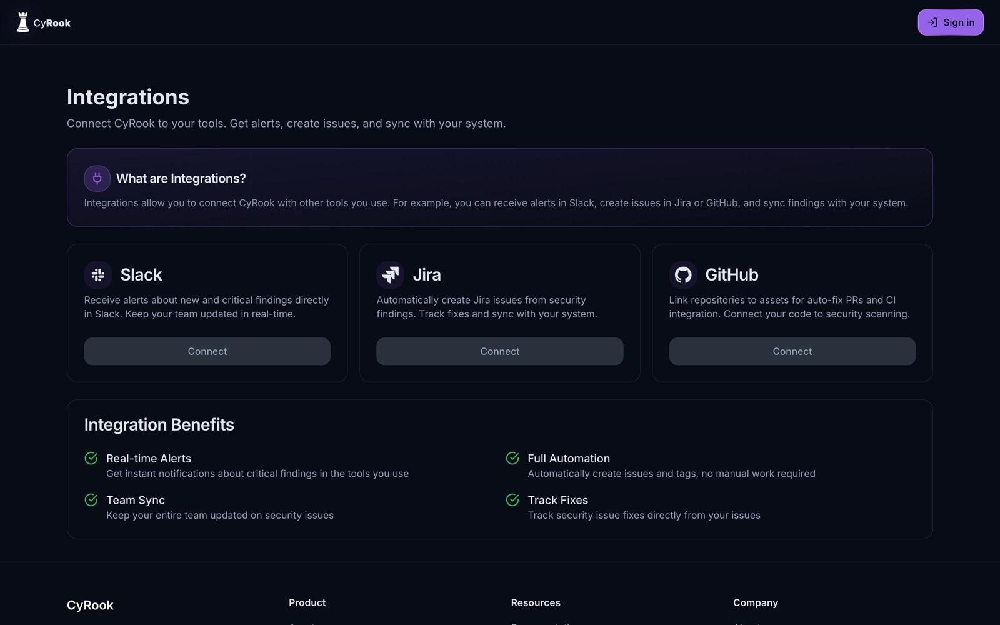
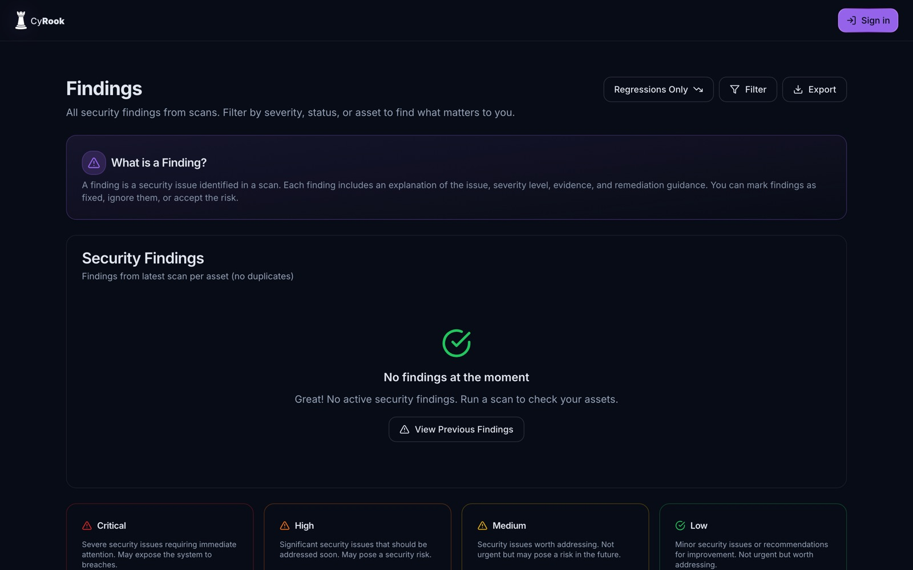
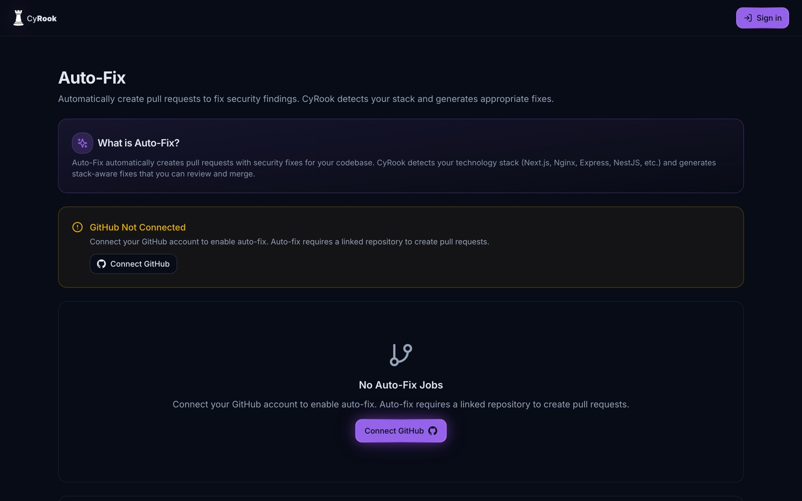

The screens
Positioning
The headline answers the objection developers actually hold about security tooling — that it slows them down. Instead of leading with a feature list it promises speed: “Security that doesn't break your velocity.” The dark purple palette is deliberately the language of developer tools, not enterprise software.

Business model
A land-and-expand structure: Free on a single asset removes the entry barrier, and expansion is by assets, scans and AI credits. Starter carries the Most Popular badge to anchor the choice on the second tier rather than the cheapest — a design decision with a direct effect on ARPU.

The core workflow
This is what turns CyRook from a thing you check into a quality gate inside the pipeline. Deployments can be blocked on security posture. Every screen opens with a “What is…?” card — a pattern repeated throughout the product that makes security concepts legible to people who aren't security engineers.

Ecosystem
This is where the product becomes sticky. Once findings turn into Jira issues and Slack alerts, CyRook enters the daily workflow instead of remaining a dashboard someone opens monthly. Three integrations only — deliberate focus over a long catalogue.

Enterprise readiness
Abstract standards translated into a single percentage per framework — PCI-DSS, GDPR and SOC 2. Colour carries meaning: green and amber say immediately where attention is needed, and each score expands into the requirements and findings behind it. This is the screen that opens the door to mid-market.

The core loop
Scan → finding → fix. Every finding carries a severity, evidence and remediation guidance. Auto-Fix detects the stack — Next.js, Nginx, Express, NestJS — and opens a pull request ready for review. Empty states aren't left empty: they explain the concept and show the severity taxonomy.

